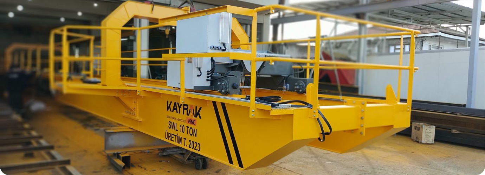
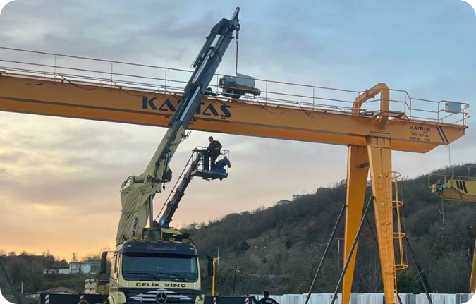
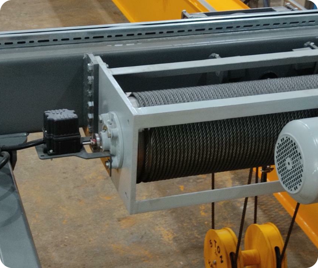
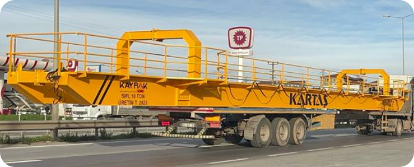
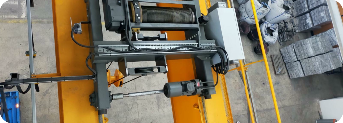

PORTAL VİNÇLER
SAHANIN YÜKÜNE GÜÇLÜ ÇÖZÜM
Geniş saha uygulamaları, stok alanları ve açık hava depolama alanlarında yük taşımanın en etkili çözümü: Portal Vinçler. Kendi ayakları üzerinde hareket eden bu vinç sistemleri, bina veya çatı desteğine ihtiyaç duymadan ağır yükleri kolayca taşımanıza olanak sağlar.

Yüksek taşıma kapasitesi, sağlam konstrüksiyonu ve çevre koşullarına dayanıklı yapısıyla Portal Vinçler; tersanelerden çelik üretim tesislerine, konteyner limanlarından büyük depo sahalarına kadar birçok alanda güvenle tercih edilmektedir.
İşletmelerin açık alan yük taşıma ihtiyacını en ekonomik ve işlevsel şekilde karşılayan bu sistemler, esnek montaj çözümleri ile kurulumda kolaylık sağlar. Modern teknolojilerle donatılmış kontrol sistemleri, operatörlere yüksek hassasiyet ve güvenlik sunar.


Eğer açık sahalarda güçlü, dayanıklı ve verimli bir kaldırma sistemine ihtiyaç duyuyorsanız, Portal Vinç çözümlerimiz ile tanışmanın tam zamanı.
Teknik Özellikler:
- Kapasite Aralığı: 1 ton – 200 ton arası
- Tipleri: Tek kirişli, çift kirişli, yarı portal (yarım ayaklı)
- Ray Genişliği: İhtiyaca göre özelleştirilebilir (5 – 40 metre arası)
- Kaldırma Yüksekliği: 6 m – 40 m (uygulamaya göre değişebilir)
- Seyir Sistemi: Ray üzerinde hareket eden motorlu yürüyüş grubu
- Çalışma Alanı: Açık sahalar, stok alanları, konteyner terminalleri, dökümhaneler
- Koruma: Dış ortam için IP65 korumalı elektrik panoları, UV ve yağmura dayanıklı yapı
- Kontrol Seçenekleri: Radyo frekanslı uzaktan kumanda, kablolu kumanda, operatör kabini



KAYRAK PORTAL VİNÇLERİ AÇIK ALANLARIN GÜÇLÜ YARDIMCISI
Avantajlar:
- Açık saha kullanımı için ideal çözümler sunar
- Kolon ve bina ihtiyacı olmadığından ek inşaat maliyeti oluşturmaz
- Kurulumu kolay, bakımı pratik
- Farklı saha koşullarına tam uyum sağlar
- Modüler yapısı sayesinde taşınabilir ve yeniden konumlandırılabilir
- Ağır sanayi ve lojistik sektörlerinde maksimum operasyonel verim
Öne Çıkan Özellikleri:
- Açık alanlarda yüksek taşıma performansı
- Rüzgara ve dış etkenlere dayanıklı yapı
- Ray üzerinde düzgün ve güvenli hareket
- İleri seviye fren sistemleri ile maksimum güvenlik
- Yüksek taşıma kapasitesine rağmen hafif konstrüksiyon tasarımı
- Düşük enerji tüketimi ve yüksek verimlilik
- Kapsamlı otomasyon uyumu ve uzaktan izleme imkânır